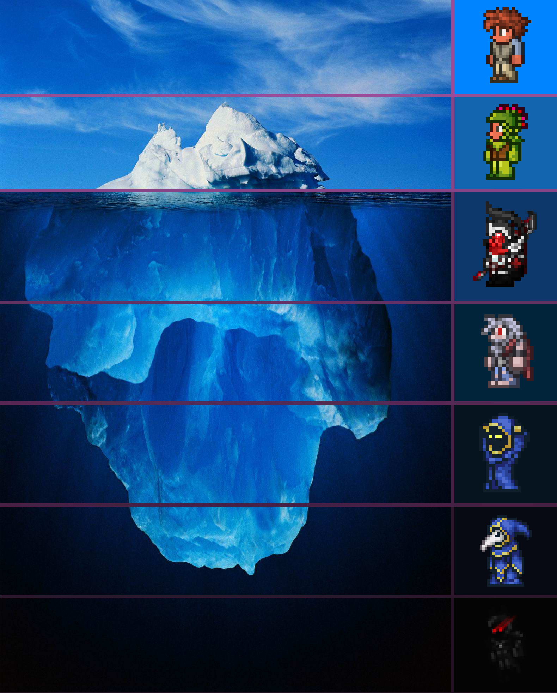

Killing Dungeon Guardian
Hoiks
TPvP
Black Hat in Pryaxis
Astral Projection
Mannequin Player
Chicken Teriyaki
Redcode
Terrarium Animation Patterns
Transmutation
Hidden Cutscenes
Deleting Liquids
Wire Ticks
RNG Numbers
Replacing the Destroyer's Head
Housing Score
Entity, Projectile and Item Limits
Polar Crafting
Different Lines of Sight
Fishing for Iron Pickaxes
Natural Sapphire Gemspark Blocks
True World Borders
Wrong Liquid Fishing
Terraria Community Archive
Popup Title
Sample
Close